Building intercultural competencies through classroom activities
A study of how structured activities and reflection can develop intercultural competence among students in Japanese higher education.
Assistant Professor in Japan · Intercultural educator · Writer as Mazzi
Living and working in Japan since 2009 has taught me that communication across cultures is not a slogan; it is daily work. At Ritsumeikan Asia Pacific University, I turn that experience and my research into courses, faculty workshops, and multilingual learning environments where people can participate with greater confidence.
0000 days in Japan — and counting
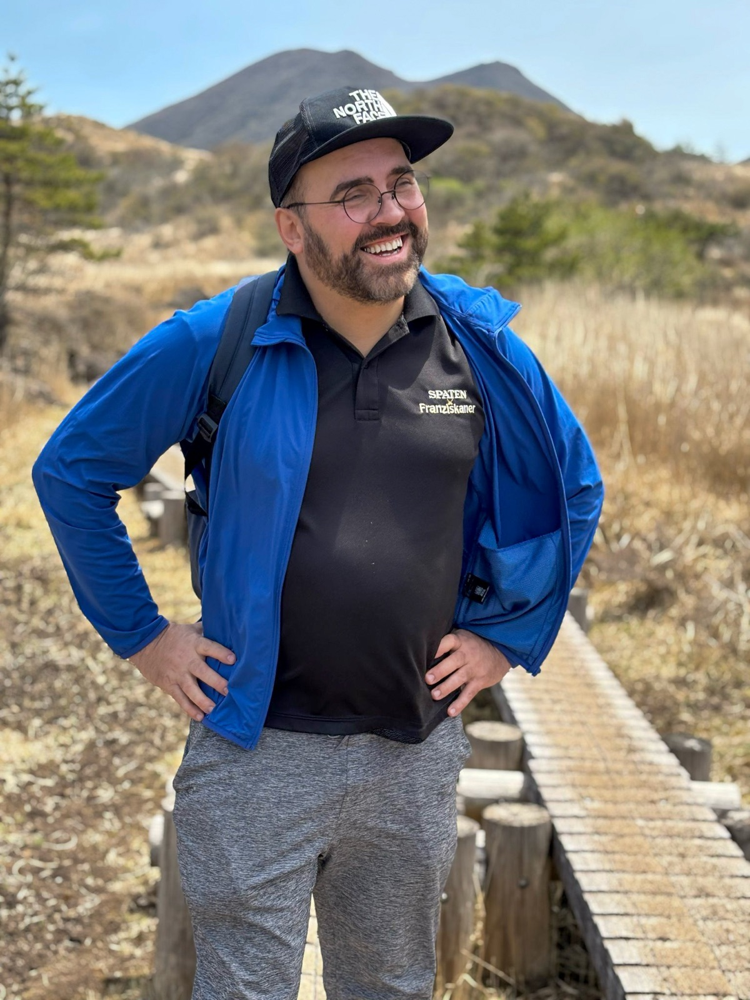
Background
I began with language and literature in Krakow, came to Japan on a MEXT scholarship, and completed a PhD in information science at Hokkaido University, specialising in natural language processing. That unusual route taught me to move comfortably between humanities, technology, and education.
Games opened one of my first routes into Japan. For nearly three decades I have written as Mazzi for Polish readers, while my university work has taken me from language-learning systems to intercultural classrooms and faculty development. Both began with the same impulse: understand how a world works, then explain it clearly without sanding away what makes it different.
A few coordinates
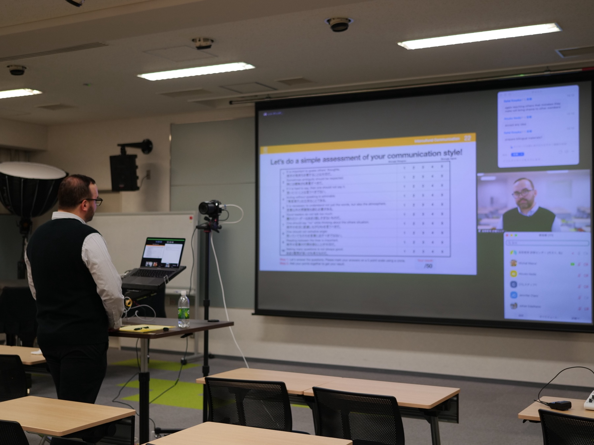

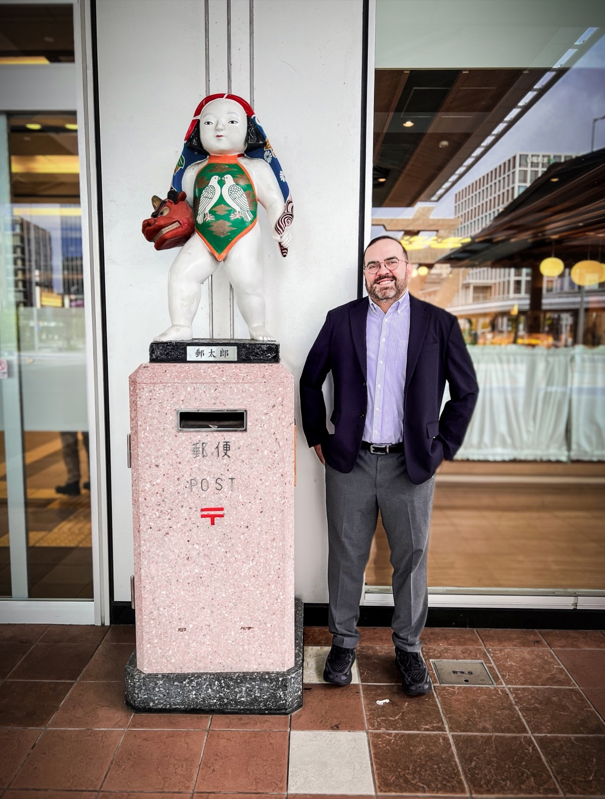
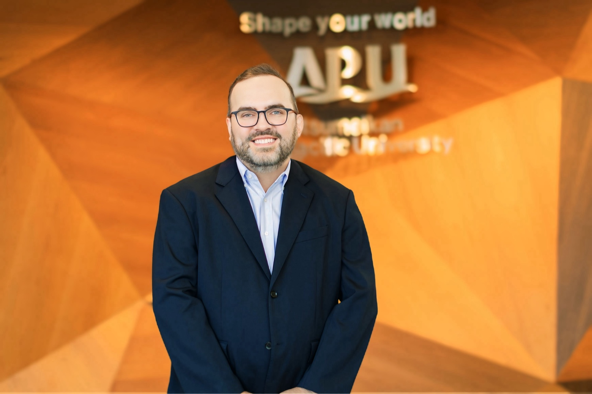
How I work
I am an Assistant Professor at Ritsumeikan Asia Pacific University in Japan. My work focuses on intercultural communication, global learning, faculty development, and teaching in multilingual higher education. I design courses and professional-development programmes that help educators and students interpret difference, participate more fully, and turn reflection into practical action.
My academic path connects language and literature, Japanese studies, information science, and natural language processing. Before joining APU, I worked and taught at Hokkaido University, developing courses and faculty-development activities around English-medium instruction, intercultural communication, curriculum design, and the changing role of generative AI in higher education.
Alongside university work, I write as Mazzi about Japan, video games, media culture, and everyday life. That public writing brings cultural interpretation and accessible explanation to a wider audience, connecting my academic interests with journalism, games, and contemporary Japanese culture.
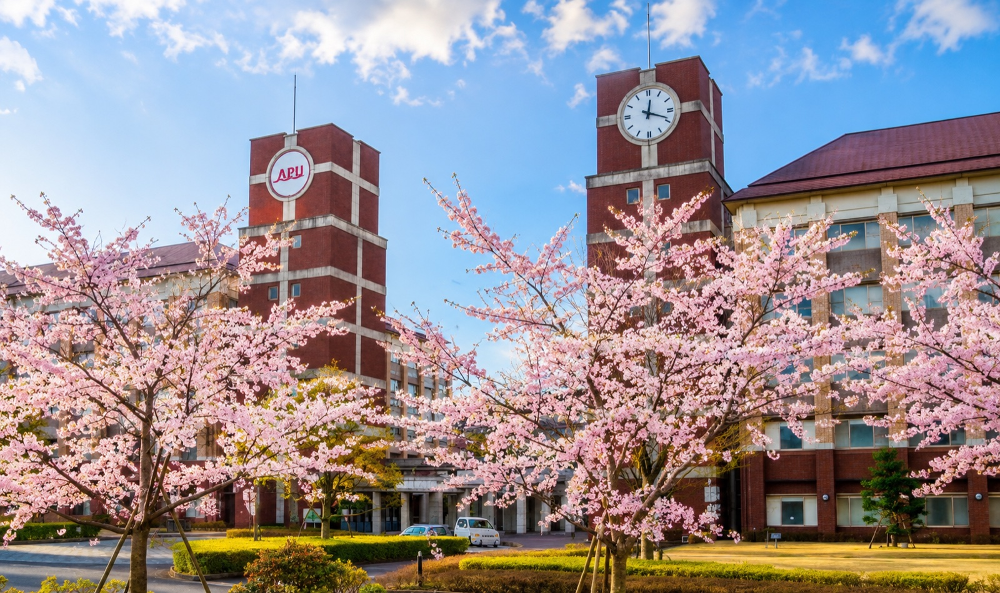
My academic home now
Beppu is where my work in intercultural education, faculty development, and public communication now comes together.
Research
My research connects intercultural communication, higher education, language learning, educational technology, and learner experience. Across these projects, I ask how classroom practices and digital tools can help people interpret difference, participate more confidently, and develop the skills needed in globally connected environments.
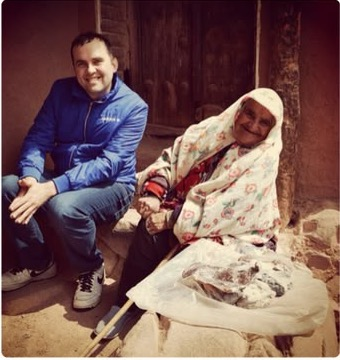
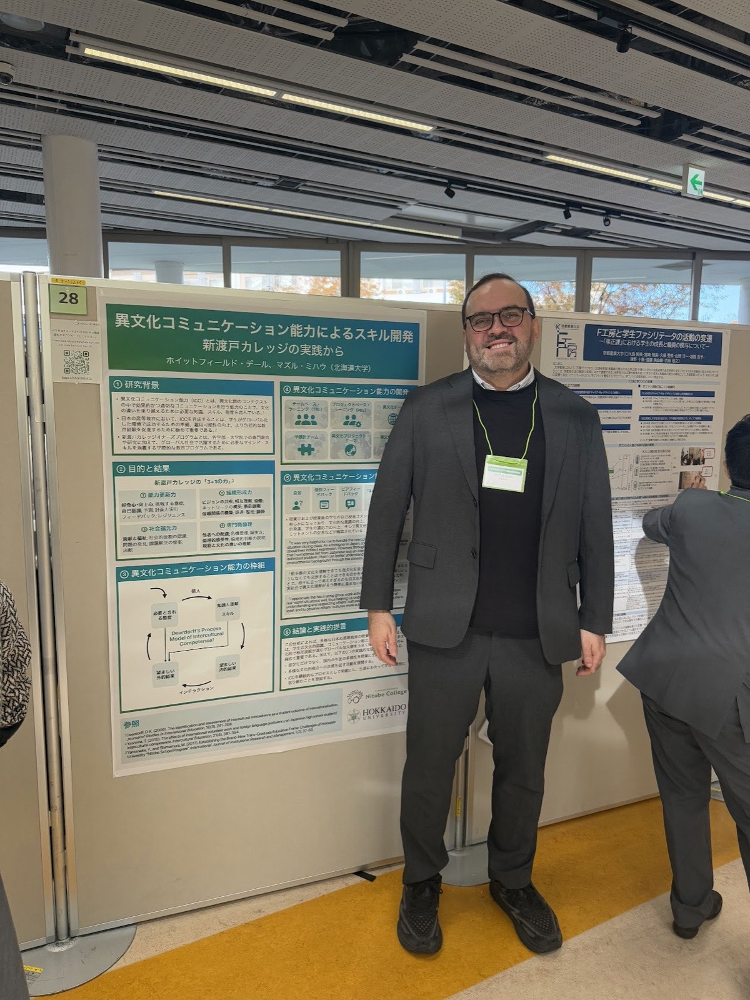
A study of how structured activities and reflection can develop intercultural competence among students in Japanese higher education.
The CO-MIX research line explores how English and Japanese can be combined in computer-assisted language learning to support vocabulary development in context.
Ongoing work brings together EMI, student choice of language, faculty development, digital media, and evidence from classroom experience.
研究
私の研究は、異文化コミュニケーション、高等教育、言語学習、教育テクノロジー、学習者経験をつないでいます。授業の実践やデジタルツールが、人々の違いの解釈、自信をもった参加、そしてグローバルにつながる環境で必要となる力の獲得を、どのように支えられるかを考えています。
構造化された活動と振り返りが、日本の高等教育における学生の異文化コンピテンスをどのように育てるかを研究しています。
CO-MIX研究では、英語と日本語をコンピュータ支援言語学習の中で組み合わせ、文脈のある語彙学習を支える方法を探っています。
EMI、学生の言語選択、ファカルティ・ディベロップメント、デジタルメディア、授業で得られる根拠を結びつける継続的な研究です。
Badania
Moje badania łączą komunikację międzykulturową, szkolnictwo wyższe, naukę języków, technologie edukacyjne i doświadczenie uczących się. W tych projektach pytam, jak praktyki klasowe i narzędzia cyfrowe mogą pomagać w interpretowaniu różnic, pełniejszym uczestnictwie oraz rozwijaniu kompetencji potrzebnych w połączonym globalnie świecie.
Badanie tego, jak uporządkowane aktywności i refleksja mogą rozwijać kompetencje międzykulturowe studentów japońskiego szkolnictwa wyższego.
Linia badawcza CO-MIX analizuje, jak łączenie angielskiego i japońskiego w komputerowo wspomaganej nauce języka może wspierać naukę słownictwa w kontekście.
Bieżąca praca łączy EMI, wybór języka przez studentów, faculty development, media cyfrowe i dowody pochodzące z doświadczeń klasowych.
Selected Practice
At APU, graduate students move from subject expertise to a one-page class outline and an activity they can actually facilitate, test with peers, and revise.
A 15-week classroom study used critical incidents and reflection to make empathy, interpretation, and cultural self-awareness visible; the work became a peer-reviewed article in 2023.
In Video Games in Society, students wrote real reviews and pitched game concepts. Selected work reached PSX Extreme, and the course received a 4.58/5 student-survey score.
From Hokkaido University workshops to a 2024 invited lecture at Kitami Institute of Technology, I frame AI as a tool for design and inquiry that still requires verification and academic judgment.
Workshop Offer
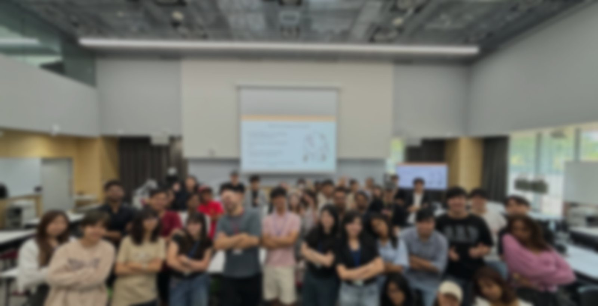
Design Principle
I keep the theory concise, then give people time to work on a real class, difficult conversation, or programme decision. Templates, peer feedback, rehearsal, and reflection turn the session into a usable artifact and a next step that fits their institution.
Verified Experience
Recent sessions covered teaching in English, intercultural communication, syllabus design, and preparing for ChatGPT in the classroom.
The course received a 4.58/5 overall student-survey score in Hokkaido University's 2023 Excellent Teacher selection.
A webinar comparing teaching across Poland, Japan, and Italy, with intercultural context at the centre of the discussion.
For two years, I have helped facilitate learning across intercultural communication, leadership, presentation skills, feedback, and international project collaboration for mixed student cohorts.
One Curiosity, Two Audiences
As Mazzi, I have reported from Japan, interviewed creators, followed game culture on the ground, and written long-form features for Polish readers. That work taught me to notice telling details, respect the audience, and make context readable without turning Japan into an exotic backdrop.
The classroom asks for the same care. Whether students are discussing culture, pitching a game, or planning an international space-sector project, my job is to help them see assumptions, find language for difficult ideas, and communicate to people who do not already think like they do.
Browse the writing portfolio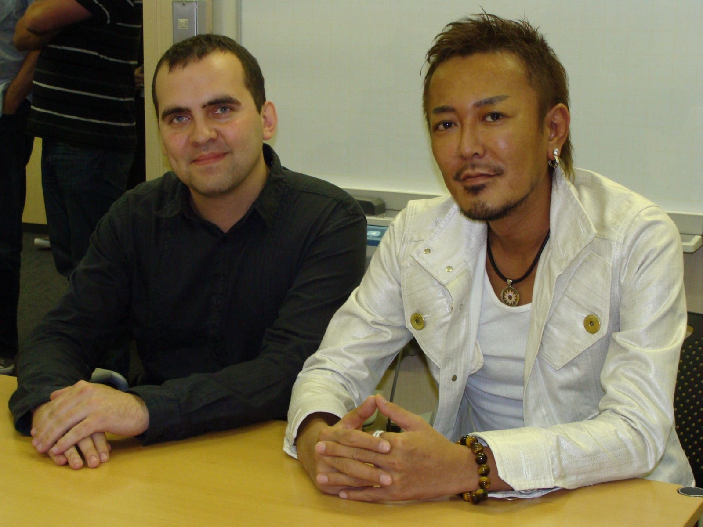
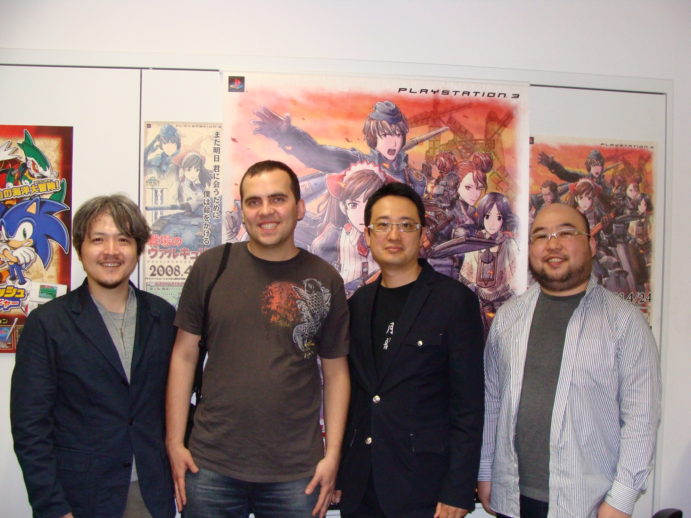
“I have spent my career learning how to enter unfamiliar worlds, read their rules, and help other people find their way in.”
Position Essay
A concise account of why games, Japan, public writing, and intercultural education belong in the same intellectual and professional portfolio.
Read the essayA few places to meet my work
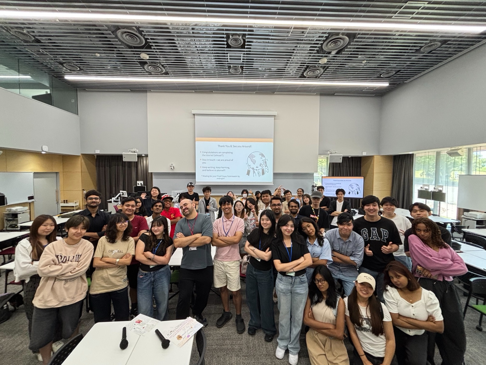
As an APU academic, I led an international student panel and the APU Student Podcast, helping students share honest, practical perspectives on choosing a university and studying in Japan.
Open the APU featureAn official profile of my academic path, research agenda, faculty development work, and public communication.
Read the newsletter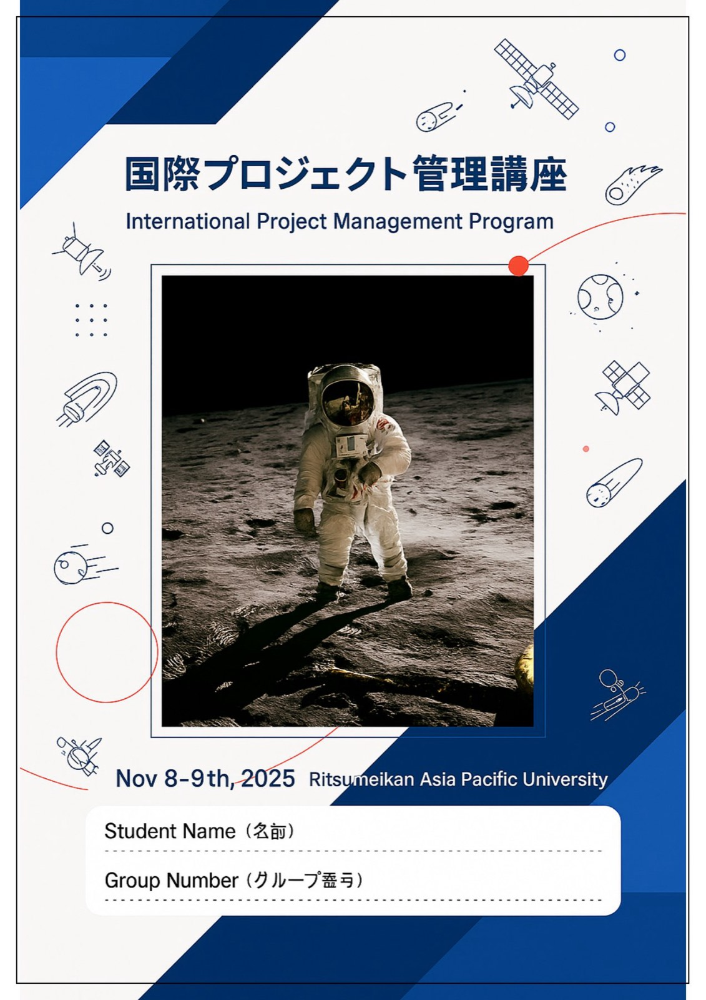
A collaborative interdisciplinary education project connecting space-sector knowledge with management, social science, innovation, and human-resource development.
Open the programme storyA long-form conversation about intercultural communication, teaching in Japan, public writing, games, and life between cultures.
Read the interviewA long conversation about scholarship, academic life, AI and language learning, moving from Hokkaido to Kyushu, and explaining Japan without turning it into a fantasy.
Listen to the podcast仕事に出会えるいくつかの場所
APUの教員として国際学生パネルとAPU Student Podcastを担当し、大学選びと日本での学びについて、学生自身の率直で実践的な視点を発信する場をつくりました。
APUの特集を開く研究の歩み、研究テーマ、ファカルティ・ディベロップメント、パブリック・コミュニケーションを紹介する公式プロフィールです。
ニュースレターを読む異文化コミュニケーション、日本での教育、執筆、ゲーム、文化のあいだで生きることについてのロングインタビューです。
インタビューを読む奨学金、大学での生活、AIと言語学習、北海道から九州への移動、そして日本をファンタジーにせず伝えることについて語りました。
ポッドキャストを聴くKilka miejsc, w których spotkasz moją pracę
Jako pracownik akademicki APU poprowadziłem panel i APU Student Podcast, pomagając studentom dzielić się szczerym, praktycznym doświadczeniem wyboru uczelni i studiowania w Japonii.
Otwórz materiał APUOficjalny profil mojej drogi akademickiej, agendy badawczej, pracy w faculty development i komunikacji publicznej.
Przeczytaj newsletterWspólny interdyscyplinarny projekt edukacyjny łączący wiedzę o sektorze kosmicznym z zarządzaniem, naukami społecznymi, innowacją i rozwojem kapitału ludzkiego.
Otwórz opis programuRozmowa o komunikacji międzykulturowej, nauczaniu w Japonii, publicystyce, grach i życiu pomiędzy kulturami.
Przeczytaj wywiadDługa rozmowa o stypendium, życiu akademickim, AI i nauce języka, przeprowadzce z Hokkaido na Kiusiu oraz opowiadaniu o Japonii bez zamieniania jej w fantazję.
Posłuchaj podcastuContact
I am especially interested in work with centers for teaching and learning, international programmes, graduate schools, and academic teams developing multilingual or intercultural learning.